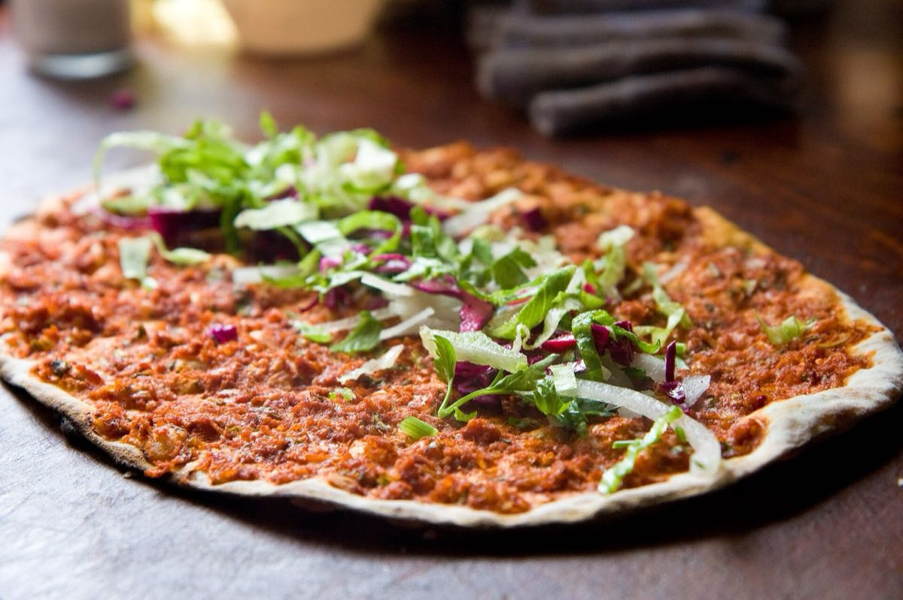
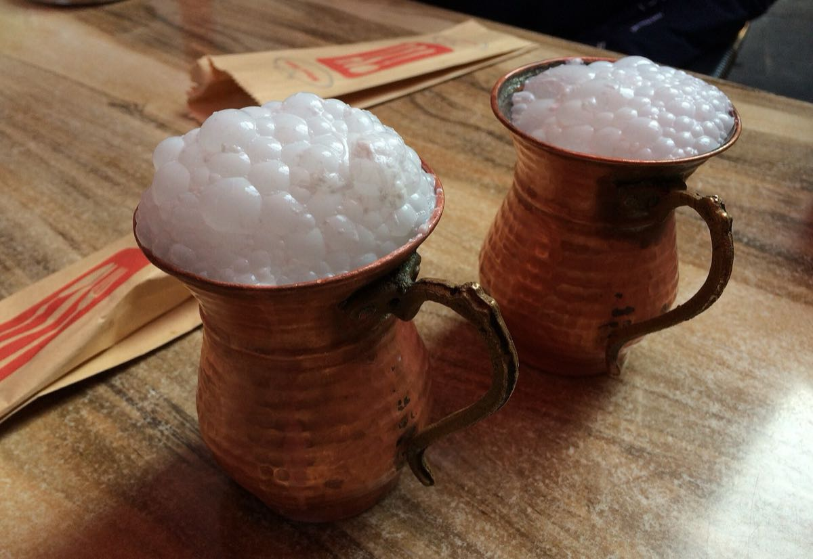

Adana kebap
Acılı kıyma, közde şişte. Lavaş, közlenmiş biber ve domatesle.

Sirkeci, Hocapaşa Sokağı
Ateşte pişen kebap, sıcak pide, soğuk ayran. Her gün 11:00'den gece yarısına kadar.
Google'da 3.545 yorumdan 4,8 puanUstanın en çok sipariş edilen tabakları. Güncel menü ve fiyatlar için bizi arayın.
Acılı kıyma, közde şişte. Lavaş, közlenmiş biber ve domatesle.

İnce döner, tırnak pide, domates sosu ve kızgın tereyağı.

Taş fırında, ince hamurla. Limon ve maydanozla servis.

Adana, Urfa veya tavuk. Ayakta yemek isteyenler için sıcak paket.

Bakır maşrapada, bol köpüklü. Kebabın yanına olmazsa olmaz.
Ankara Caddesi'nden Hocapaşa Sokağı'na saptığınızda dumanın kokusu sizi karşılar. Özcan Usta aynı işi yapıyor: iyi et, doğru ateş, sıcak servis.
Gar'dan inen yolcular, çarşı esnafı ve şehri gezenler aynı masalarda oturur. Masaya gelen her tabak ocaktan yeni çıkmıştır.
[Kuruluş yılı ve ustanın kısa hikâyesi buraya eklenecek]
Her 10 yorumdan 9'u beş yıldız. Bunu biz değil, sofraya oturanlar yazdı.
Haftanın yedi günü 11:00 ile 24:00 arası. Geç saatte de ocak sıcak.
Tüm etlerimiz helal kesim. Her tabak ocaktan masaya sıcak gelir.
Tekerlekli sandalyeye uygun giriş, oturma düzeni ve park yeri.
Cevabı burada yoksa 0212 527 00 27 numarasından sorun.
Gerekli değil, ama akşam 19:00 ile 21:00 arası ve hafta sonları yoğunuz. Kalabalık gelecekseniz formdan masa ayırtın veya arayın.
Haftanın her günü 11:00 ile 24:00 arası açığız. Bayramlarda saatler değişebilir.
Evet. Kullandığımız tüm etler helal kesimdir.
T1 tramvay Sirkeci durağından ve Marmaray Sirkeci istasyonundan yürüyerek birkaç dakika. Hocapaşa Camii'nin hemen yanındayız.
Evet. Girişimiz, oturma düzenimiz ve park yerimiz tekerlekli sandalyeye uygundur.
Formu doldurun, sizi arayıp onaylayalım. Acele ediyorsanız doğrudan arayın.
0212 527 00 27 info@ozcanusta.com.tr[E-posta adresi değiştirilecek]